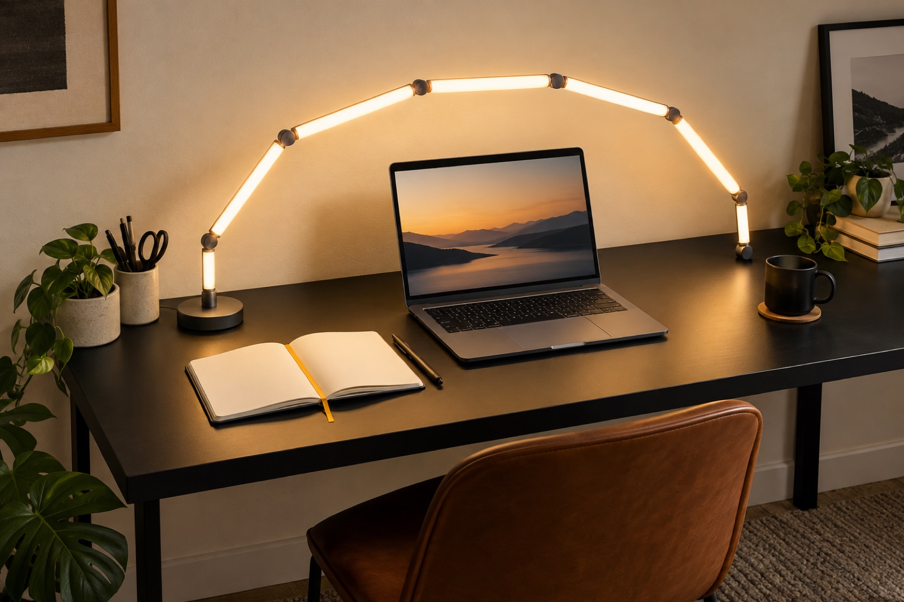
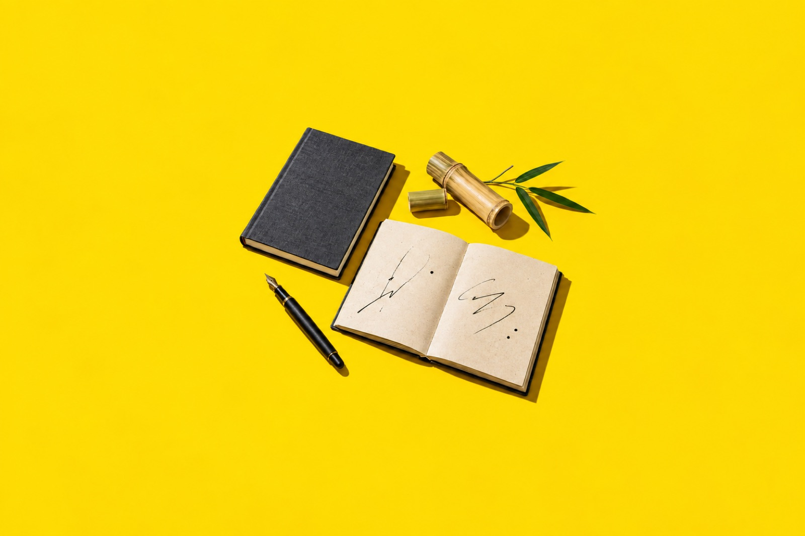
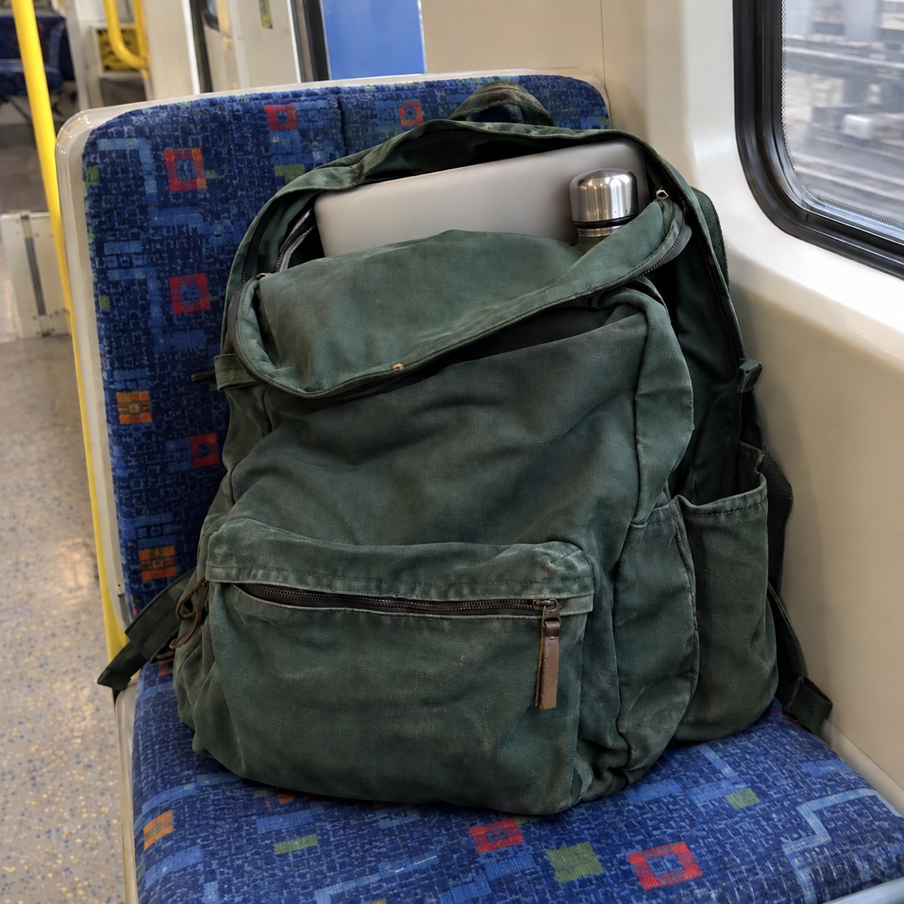
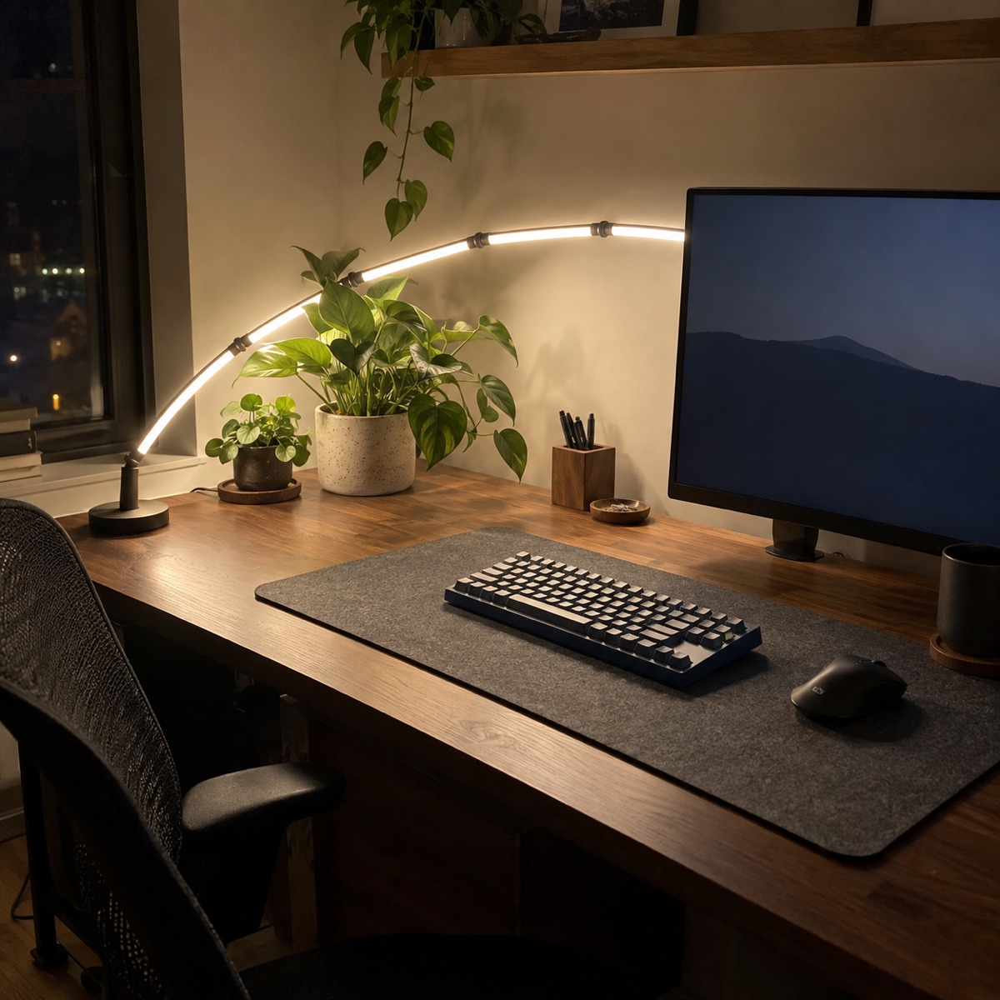

募資中
剩 12 天
每個專案都必須揭露材料來源與生產夥伴，查得到才上得了架。
設計、打樣、生產、出貨四個里程碑公開上牆，逾期會主動通知你。
募資金額、贊助人數、剩餘天數即時更新，數字不經人工修改。
募資期滿未達目標金額，款項自動原路退回，不收任何手續費。
數字每分鐘更新，倒數七天內的專案會標上提醒。








「去年贊助的帆布包，說三月出貨就三月到，連打樣延期都有發公告，這很難得。」

「第一次贊助硬體，看到工廠照片一週更新一次，心裡踏實很多。」
募資失敗不扣款、不收手續費，款項 7 個工作天內原路退回。
任一里程碑逾期超過 14 天，平台會代為通知所有贊助者並要求說明。
每個專案都經過產地、樣品與生產能力查核後才開放募資。